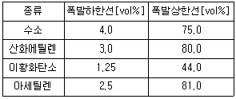
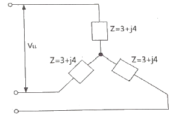
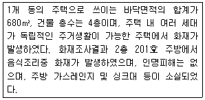
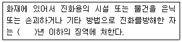
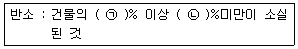

화재감식평가기사 (2020-06-06 기출문제)
1과목: 화재조사론
1. 다음 중 A급 화재에서만 발생할 수 있는 위험현상으로 옳은 것은?
- 보일 오버(boil over)
- 슬롭 오버(slop over)
- 플레임 오버(flame over)
- 프로스 오버(froth over)
(정답률: 79%)

2. 가솔린의 연소범위(vol%)가 1.4~7.6일 때 위험도로 옳은 것은? (단, 소수 둘째자리에서 반올림할 것)
- 0.8
- 1.2
- 4.4
- 6.4
(정답률: 72%)
3. 화재현장의 관찰 방법으로 틀린 것은?
- 소실 붕괴된 부분에서는 복원적인 관점에서 관찰한다.
- 발화원인이 될 수 있는 가연물에 유의하여 조사한다.
- 건물 구조재 수용품 등의 소실 상황을 통하여 연소의 방향을 고려한다.
- 소손 및 탄화 정도가 강한 부분에서 약한 부분으로 이동하며 관찰한다.
(정답률: 80%)
4. 다음 중 화재현장 출입금지구역의 범위를 확대하여야 할 이유로 옳지 않은 것은?
- 진화 후에 행방불명자를 확인한 경우
- 구조물 등이 광범위하게 소손되어 바닥에 연소 낙하물이나 퇴적물이 많이 쌓인 경우
- 건물 전체가 소손된 상황으로 연소 진행방향이 확인되지 않을 때
- 발화지점 부근의 목격상황에 대한 진술이 제각기 달라 발화지점이 불명확할 때
(정답률: 72%)
5. 소방기본법령상 화재조사전담부서에서 갖추어야 할 발굴 장비로 옳지 않은 것은?
- 전동그라인더
- 슈미트해머
- 다용도 칼
- 빗자루
(정답률: 66%)
6. 다음 중 가연성 물질에 해당하는 것은?
- 아르곤
- 산화알루미늄
- 일산화탄소
- 헬륨
(정답률: 77%)
7. 화재조사 및 보고규정상 건물의 동수 산정방법에 관한 설명 중 옳은 것은?
- 목조 또는 내화조 건물이 격벽으로 방화구획되어 있는 경우 2개의 동으로 본다.
- 구조에 관계없이 지붕 및 실이 하나로 연결되어 있는 것은 2개의 동으로 본다.
- 건물의 외벽을 이용하여 실을 만들어 헛간, 작업실 및 사무실 등의 용도로 사용하고 있는 것은 주건물과 1동으로 본다.
- 독립된 건물과 건물 사이에 차광막, 비막이 등의 덮개를 설치하고 그 밑을 통로 등으로 사용하는 경우는 동일동으로 본다.
(정답률: 71%)
8. 다음 중 폭발 위력의 지표로 사용될 수 있는 자료로 옳지 않은 것은?
- 파편의 비행거리
- 무너진 벽의 종류와 구조
- 폭발 시점
- 폭심부의 크기 및 깊이
(정답률: 82%)
9. 이산화탄소 소화약제의 주된 소화효과로 옳은 것은?
- 냉각효과
- 질식효과
- 부촉매효과
- 억제효과
(정답률: 81%)
10. 다음 중 화재현장에서 확보해야하는 화재현장의 관계자의 특징으로 가장 거리가 먼 것은?
- 화상을 입었거나 의류가 타버린 자
- 의류가 물에 젖어 있거나 오손되어 있는 자
- 현장부근에 말쑥한 정장차림의 구경하고 있는 자
- 가재도구를 집어 들고 있거나 물건을 반출하고 있는 자
(정답률: 85%)
11. 다음 중 발굴이 끝난 후의 화재 전 상황으로 복원하는 요령으로 옳지 않은 것은?
- 형체가 소실되어 배치가 불가능한 것은 대용품을 사용하되, 대용품이라는 것이 인식되도록 한다.
- 관계인을 입회시켜 복원상황을 확인시킨다.
- 잔존물이 파손되지 않도록 잦은 위치이동은 하지 않는다.
- 불명확한 것은 예측을 통하여 복원한다.
(정답률: 83%)
12. 소방기본법령상 “화재조사전담부서의 설치, 운영 등”의 조항에 명시된 내용으로 옳지 않은 것은?
- 화재조사자의 포상
- 화재조사자의 자격
- 화재조사전담부서장의 업무
- 화재조사에 필요한 장비 및 시설
(정답률: 83%)
13. 다음 중 화재플럼(Fire Plume)에 의해 수직벽면에 생성되는 패턴으로 옳지 않은 것은?
- V 패턴
- 모래시계 패턴
- 도넛형태 패턴
- U 패턴
(정답률: 79%)
14. 다음의 건물 구획실 화재에 대한 설명 중 옳은 것은?
- 일반적으로 최성기의 구획실 화재 온도는 500~600℃까지 도달한다.
- 연기의 이동은 소화작용에서 발생하는 부력에 의존한다.
- 환기지배형 화재에서는 CO와 연기의 발생량이 많아진다.
- 대부분의 구획실과 건물은 최성기에서 연료지배형이 된다.
(정답률: 65%)
15. 화재 시 발생하는 박리 현상(spalling)의 원인에 대한 설명으로 옳은 것은?
- 콘크리트에 포함된 수분의 증발 및 팽창
- 철근 또는 철망 및 주변 콘크리트 간의 불균일한 수축
- 콘크리트 혼합물과 골재 간의 균일한 팽창
- 화재에 노출된 표면과 슬래브 내장재 간의 균일한 팽창
(정답률: 71%)
16. 다음의 구획실 화재 성장단계에 대한 설명 중 옳은 것은?
- 초기→플래시오버→쇠퇴기→최성기→자유연소 순으로 진행된다.
- 자유연소단계는 환기지배형 연소이며 복사열에 의해 확산된다.
- 플래시오버 현상은 최성기 전에 주로 발생한다.
- 최성기는 연료지배형 연소단계이며, 접염방식으로 확산된다.
(정답률: 79%)
17. 다음 중 환기지배형 화재에 대한 설명으로 옳은 것은?
- 대부분 화재 초기에 발생한다.
- 연료공급에 좌우된다.
- 환기량이 크다.
- 불완전연소에 가깝다.
(정답률: 63%)
18. 목재 균열흔의 종류로 옳지 않은 것은?
- 고소흔
- 열소흔
- 완소흔
- 강소흔
(정답률: 71%)
19. 전도 열전달 형태와 관계되는 법칙으로 적합한 것은?
- 퓨리에(Fourier)의 법칙
- 플랭크(Planck)의 법칙
- 뉴튼(Newton)의 법칙
- 피크(Fick)의 법칙
(정답률: 68%)
20. 다음 중 화재조사자가 유의해야 할 사항으로 옳은 것은?
- 관계자 또는 목격자의 진술에 근거하여 주관적 방법으로 접근한다.
- 정확한 화재조사를 위해서는 개인의 권리를 침해할 수도 있다.
- 조사결과에 대한 보안 유지와 언론보도에 신중해야 한다.
- 타 조사기관 상호간에는 비밀을 유지하여야 한다.
(정답률: 81%)
2과목: 화재감식론
21. 가스사고 형태별 분류에 해당하지 않는 것은?
- 폭발
- 질식
- 중독
- 재질 불량
(정답률: 82%)
22. 발화요인 분류 중 화학적 요인에 해당되지 않는 것은?
- 역화
- 혼촉발화
- 자연발화
- 금수성 물질이 물과 접촉
(정답률: 63%)
23. 전선의 소선 일부가 끊어져 발생하는 국부적인 저항치 증가 현상으로 나타나는 전기화재 현상에 해당하는 것은?
- 트래킹
- 아산화동
- 반단선
- 그래파이트
(정답률: 70%)
24. 방화에 사용되는 촉진제로 거리가 먼 것은?
- 아세톤
- 시너
- 톨루엔
- 수산화나트륨
(정답률: 69%)
25. 플라스틱의 일반적인 연소특성으로 틀린 것은?
- 폴리염화비닐은 연소되면 염화수소 가스가 발생한다.
- 열가소성 플라스틱에는 아미노수지, 페놀수지, 에폭시수지 등이 있다.
- 플라스틱은 일반적으로 저분자 물질과 달리 온도에 따른 상변화가 명확하지 않다.
- 열경화성 플라스틱은 화염에 노출되면 표면이 고체 숯과 같이 되는 경향 때문에 내부로의 연소확대가 지연된다.
(정답률: 54%)
26. 상대습도별 산불발생위험도에 대한 설명으로 틀린 것은?
- 상대습도가 60% 이상이면 산불이 매우 발생하기 쉽다.
- 상대습도가 40~50%면 산불이 발생하기 쉽고 연소 진행이 빠르다.
- 상대습도가 50~60%면 산불이 발생할 수 있으나 연소 진행이 느리다.
- 상대습도가 40% 이하면 산불 발생 시 진화가 곤란할 정도로 연소 진행이 빠르다.
(정답률: 73%)
27. 유연탄의 자연발화 위험성에 대한 설명으로 틀린 것은?
- 주변온도가 높을수록 산화반응이 촉진된다.
- 괴상은 분말상보다 자연발화를 일으키기 쉽다.
- 채탄 직후의 석탄은 자연발화의 위험이 크다.
- 자연발화는 저탄장 등에 대량으로 쌓아둔 곳에서 일어나기 쉽다.
(정답률: 69%)
28. 나무, 천, 종이 및 가구와 같은 가연성 물질의 화재 분류(class)는?
- Class A
- Class B
- Class C
- Class D
(정답률: 83%)
29. 물질의 상태에 대한 설명으로 옳은 것은?
- 물의 증발잠열은 80cal/g이다.
- 분자는 액체 상태일 떄 가장 자유롭게 운동할 수 있다.
- 온도 변화없이 상태 변화를 위해 필요한 열을 잠열이라 한다.
- 액체상태에서 열을 흡수하여 에너지가 증가하면 고체상태가 된다.
(정답률: 73%)
30. 항공기의 열전대 화재경고장치(thermocouple fire warning system) 중 배선시스템의 구성요소가 아닌 것은?
- 감지 회로(detector circuit)
- 알람 회로(alarm circuit)
- 단락 회로(short circuit)
- 시험 회로(test circuit)
(정답률: 61%)
31. 차량 충전장치와 시동장치에 대한 설명으로 틀린 것은?
- 충전장치는 교류발전기(alternator), 레귤레이터(regulator)로 구성되며, 시동장치에는 스타터가 있다.
- 정류기 내에 있는 다이오드가 과전류 등으로 인해 그 기능을 잃은 경우, 다이오드가 소실되는 경우가 있다.
- 챠콜 캐니스터의 보디(body)는 금속재가 많은 점에서 2차적으로 착화하여도 연소되지 않으므로 관찰이 용이하다.
- 배터리 단자는 납 또는 납 합금으로 되어있어 화재열로 용이하게 녹아버리므로, 화재감식 시 배터리배선 터미널부의 용융 등도 확인한다.
(정답률: 70%)
32. 임황(林況)과 산불과의 관계에 대한 설명으로 옳은 것은?
- 활엽수는 침엽수보다 산불위험성이 높다.
- 동령림은 이령림보다 산불위험성이 높다.
- 혼효림은 단순림보다 산불위험성이 높다.
- 수종별로 비교하면 음수는 양수보다 산불위험성이 높다.
(정답률: 50%)
33. 다음 표의 가스들을 위험도가 높은 물질부터 순서대로 나열한 것은?

- 아세틸렌＞산화에틸렌＞이황화탄소＞수소
- 아세틸렌＞산화에틸렌＞수소＞이황화탄소
- 이황화탄소＞아세틸렌＞수소＞산화에틸렌
- 이황화탄소＞아세틸렌＞산화에틸렌＞수소
(정답률: 66%)
34. 유류성분 감정기구인 가스크로마토그래피 분석의 장점으로 틀린 것은?
- 물질이 유사한 여러 성분의 혼합계 분리에 매우 유효하다.
- 현장조사 시 휴대 및 가스 포집이 간편하며 성분판별이 가능하다.
- 가스 상태로 분석하기 때문에 조작도 간단하고 시간도 빠르다.
- 각 성분을 검출하여 그 양을 전기적인 신호로 기록계에 저장하고 도형적으로 기록함으로써 분석결과가 객관적이다.
(정답률: 56%)
35. 미소화원과 유염화원의 특징으로 옳은 것은?
- 유염화원이 무염화원보다 에너지량(열량)이 적다.
- 유염화원은 무염화원보다 연소 확대에 피요한 시간이 짧다.
- 유염화원은 가연물과 접촉 시 바로 착화할 가능성이 무염화원보다 적다.
- 무염화원의 연소흔적은 깊이 탄 것은 보이지 않으며 연소범위가 넓은 경향을 보인다.
(정답률: 64%)
36. 방화의 주요 동기가 아닌 것은?
- 실수
- 복수심
- 경제적 이익
- 범죄은폐
(정답률: 79%)
37. 다음 중 담뱃불 접촉에 의한 물질의 착화 가능성이 가장 낮은 것은?
- 톱밥류
- 마른 건초류
- 구겨진 신물지류
- 가솔린 증기
(정답률: 64%)
38. 그림과 같은 3상 부하회로에 있어서 부하전류가 20A일 떄 부하의 선간전압 VLL은 얼마인가?

- 100
- 100√2
- 100√3
- 200
(정답률: 56%)
39. 차량 배터리의 내부에서 화원이 될 가능성이 있는 원인에 속하지 않는 것은?
- 외부 단자의 이완
- 과충전에 의한 과열
- 과충전에 의한 용단스파크불꽃
- 배터리 전해액 부족에 의한 내부 쇼트
(정답률: 66%)
40. 방화행위의 입증요소로 틀린 것은?
- 방화재료의 입수 경위가 밝혀져야 한다.
- 방화를 한 장소 및 소훼물이 있어야 한다.
- 방화의 수단과 방법이 실현가능하여야 한다.
- 방화의 수단이 가능한지 추상적으로 검토되어야 한다.
(정답률: 74%)
3과목: 증거물관리 및 법과학
41. 관계자에게 질문할 경우 유의해야 하는 사항으로 틀린 것은?
- 질문자는 자기신분을 밝힌다.
- 피질문자에 대한 선입견을 배제한다.
- 관계자에는 초기소화자, 피난자, 출동한 소방관도 포함된다.
- 실체적 진실을 밝히기 위해서는 어느 정도의 유도질문이나 상대방의 감정을 도발하는 질문기법도 필요하다.
(정답률: 76%)
42. 비디오카메라에 대한 설명으로 틀린 것은?
- 목격자, 소유자 거주인, 혐의자와의 면담에서 사용할 수 있다.
- 비디오카메라의 장점은 보는 각도를 점차 이동하며 화재현장을 나타내는 것이다.
- 주밍-인(zooming-in)이나 과장확대기법을 적극적으로 사용한다.
- 가장 큰 장점으로 점진적으로 시각의 움직임에 의해 화재현장을 보여주는 능력이 있다.
(정답률: 69%)
43. 연소범위에 영향을 미치는 요인에 대한 설명으로 틀린 것은?
- 온도가 높아질수록 연소범위는 좁아진다.
- 고온ㆍ고압의 경우 연소범위는 더욱 넓어진다.
- 압력이 높아지면 하한값은 크게 변하지 않으나 상한값은 높아진다.
- 혼합기를 이루는 공기의 산소농도가 높을수록 연소범위는 넓어진다.
(정답률: 70%)
44. 가스크로마토그래피(GC) 분석을 위한 용매추출법 중 잔류물을 추출하기 위한 용액으로 틀린 것은?
- 크실렌
- η-펜탄
- 이황화탄소
- η-헥산
(정답률: 47%)
45. 화재사 또는 흡연과 관련된 CO-Hb의 농도에 관한 설명으로 맞는 것은?
- 일반적으로 비흡연자의 CO-Hb 농도는 0.01%이다.
- 40% 이상의 CO-Hb 농도는 CO자체만으로 사망할 수 있는 수치이다.
- 일반적으로 하루 두갑 이상 흡연하는 사람의 CO-Hb 농도는 3~8%이다.
- 40%이하의 CO-Hb 농도는 산소 부족, 심정지 또는 열화상으로 사망할 수 있다.
(정답률: 53%)
46. 냉온수기 자동온도 조절장치에서 절연체의 오염에 의한 트래킹 화재가 발생한 경우 수거하여야 할 증거물로 맞는 것은?
- 응축기
- 시즈히터
- 압축기
- 서모스탯
(정답률: 73%)
47. 화재현장 사진촬영에 대한 설명으로 틀린 것은?
- 현장사진은 자료 확보를 위하여 충분하게 촬영한다.
- 연소 및 탄화된 형태를 조사자 시각에서 객관화하여 촬영한다.
- 발화건물 내부 촬영 시 소실된 부분을 국부적으로 촬영한다.
- 불필요한 피사체(인물 등) 촬영 금지, 접사 촬영 시 배경막 설치 후 촬영한다.
(정답률: 71%)
48. 화재증거물 사진의 촬영 및 유의사항에 관한 설명으로 틀린 것은?
- 화재증거물은 오물을 제거하고 나서 찍는다.
- 접사로 촬영하는 경우 셔터스피드를 이용해 피사계 심도를 조절한다.
- 접사 촬영이 필요할 경우 매크로렌즈(접사용) 및 링스트로보 등을 활용한다.
- 피사계 심도는 어느 정해진 시간 동안에 초점이 맞는 가장 멀리 있는 사물과 가장 가까이 있는 사물의 거리이다.
(정답률: 34%)
49. 물리적 증거물의 감정 및 시험에 대한 설명으로 틀린 것은?
- 발화 지점, 화재 특정 원인, 화재 확산에 기여한 요인 판별
- 물리적 증거물의 화학 조성을 확인하기 위한 감정 및 시험
- 물리적 증거물의 작동이나 오작동 또는 고장을 판단하기 위하여 설계가 충분한지 여부를 판별
- 실험실이나 다른 시험기관이 수행할 수 있는 특정 실험방법 및 제한사항에 관계없이 공정성을 위해 화재조사관 단독으로 감정 및 시험 실시
(정답률: 74%)
50. 화상의 위험도에 큰 영향을 미치는 인자는?
- 심도(沈度)
- 온도(溫度)
- 질병(疾病)
- 범위(範圍)
(정답률: 62%)
51. 화재 증거물의 수송으로 권장할 만한 가장 적절한 방법은?
- 직접운반
- 제3자 전달
- 우편배송
- 화물로의 배송
(정답률: 78%)
52. 전기기기 또는 구성품에 대한 증거물 수집 방법으로 틀린 것은?
- 전기적 증거물이 발견된 상태를 가능한 한 그대로 보존해야 한다.
- 제품 내 전기적 특이점이 발견된다면 해당 부분만 수거하는 것이 효과적이다.
- 일부 남은 전선 피복을 검사 할 수 있도록 가능한 전선을 길게 수집해야 한다.
- 전기기기를 전체적으로 제거하는 것이 불가능한 경우 제자리에 안전하게 놓는 것이 좋다.
(정답률: 71%)
53. 화재증거물수집관리규칙에 포함되는 내용이 아닌 것은?
- 증거물의 포장
- 증거물 감정 절차
- 증거물의 상황기록
- 초상권 및 개인정보 보호
(정답률: 30%)
54. 화재증거물수집관리규칙상 현장사진 및 비디오 촬영 시 유의사항에 대한 설명으로 틀린 것은?
- 최초 도착하였을 때의 원상태를 그대로 촬영하고 진압 순서에 따라 촬영
- 현장사진 및 비디오 촬영할 때에는 연소확대 경로 및 증거물 기록에 대한 번호표와 화살표를 표시 후에 촬영
- 증거물을 촬영할 때에는 그 소재와 상태가 명백히 나타나도록 하며, 필요에 따라 구분이 용이하게 번호표 등을 넣어 촬영
- 화재현장의 특정한 증거물 등을 촬영함에 있어서는 그 길이, 폭 등을 명백히 하기 위하여 측정용 자 또는 대조 도구를 사용하여 촬영
(정답률: 65%)
55. 열에 의한 재성형이 불가능한 합성 고분자 화합물의 종류로 맞는 것은?
- 테프론
- 폴리에틸렌
- 멜라민수지
- 폴리아크릴로니트릴
(정답률: 55%)
56. 화재현장에서 수집된 증거물의 오염에 관한 설명으로 맞는 것은?
- 물리적 증거물 대부분의 오염은 운반하는 과정에서 발생한다.
- 증거물 보관용기는 오염지역에서 떨어진 곳에 보관하여야 한다.
- 증거물의 오염방지를 위하여 화재조사관의 맨손으로 직접 수집하는 것이 원칙이다.
- 증거물 용기는 개봉상태로 유지하며, 실험실에서 조사를 마친 후 봉인되어야 한다.
(정답률: 67%)
57. 증거물 수집용기 중 유리병의 장점이 아닌 것은?
- 휘발성 액체의 증발을 방지한다.
- 내부의 증거물 확인이 용이하다.
- 장기 저장 시 증거물의 악화를 줄여 준다.
- 크기가 다양하여 많은 양을 저장할 수 있따.
(정답률: 62%)
58. 일반적인 방화 현장에서 나타나는 패턴이 아닌 것은?
- U형 패턴
- 독립연소 패턴
- 포어(pour) 패턴
- 트레일러(trailer) 패턴
(정답률: 48%)
59. 화재현장의 증거물 시료 채취 시 유의사항으로 아닌 것은?
- 가급적 증거물 전체를 수집 또는 채취
- 동일한 물질이 있었을 때는 채취하지 않고 내용만 기술
- 감정의뢰서에 증거물을 수집, 채취한 경과와 사건개요를 기술
- 채취된 증거물의 물질이 상이할 때에는 서로 섞이지 않도록 분리하여 채취, 보관
(정답률: 78%)
60. 화재 당시 살아있었음을 나타내는 생활반응으로 맞는 것은?
- 시반이 없다.
- 머리가 그을렸다.
- 기도에 매연이 부착되었다.
- 피부가 진피까지 탄화되었다.
(정답률: 75%)
4과목: 화재조사보고 및 피해평가
61. 다음은 주택화재 현장에 출동한 화재조사관이 조사한 내용이다. 해당 화재조사관이 국가화재정보시스템 유형별 조사서 중 시설용도 항목에 입력한 사항으로 맞는 것은?

- 시설용도: 주거시설-단독주택-다세대주택
- 시설용도: 주거시설-공동주택-연립주택
- 시설용도: 주거시설-기타주택-다세대주택
- 시설용도: 주거시설-도시형주택-연립주택
(정답률: 54%)
62. 건물의 일부를 개수 또는 보수한 경우에 있어서의 경과연수의 산정 기준 적용에 관한 설명으로 틀린 것은?
- 재설치비의 50%미만 개ㆍ보수한 경우 : 최초 설치연도 기준
- 재설치비의 50%이상 개ㆍ보수한 경우 : 최초 설치연도 기준
- 재설치비의 80%이상 개ㆍ보수한 경우 : 개ㆍ보수한 때를 기준으로 하여 경과연수를 산정
- 재설치비의 50~80% 미만을 각각 개ㆍ보수한 경우 : 최초 설치연도를 기준으로 한 경과연수와 개ㆍ보수한 때를 기준으로 한 경과연수를 합산하고 평균하여 경과연수를 산정
(정답률: 59%)
63. 재고자산의 상품 중 견본품, 전시품, 진열품에 대한 화재피해액 산정 시 우선 적용사항으로 맞는 것은?
- 시장거래가격으로 산정한다.
- 구입가의 50%로 일괄 산정한다.
- 구입가의 50~80%를 피해액으로 한다.
- 구입가에 감가수정한 가격으로 산정한다.
(정답률: 50%)
64. 화재조사 및 보고규정 상 화재건수를 결정할 때 1건의 화재 결정으로 틀린 것은?
- 동일 대상물에서 발화점이 2개소이며, 누전점이 동일한 화재
- 동일 대상물에서 발화점이 3개소로서 낙뢰에 의한 다발화재
- 동일 대상물에서 발화점이 4개소로서 지진에 의한 다발화재
- 각기 다른 사람에 의한 방화나 불장난으로 동일 대상물에서 발화한 화재
(정답률: 72%)
65. 재고자산의 화재 피해액 산정에 관한 사항으로 맞는 것은?
- 판매 및 일반관리비의 미실현 이익 내지 미실현 비용을 포함한다.
- 재고자산 중 반제품은 구입 후 사용하지 않고 보관중인 소모품을 의미한다.
- 재고자산은 구입비용 자체가 피해액이 되므로 감가공제는 하지 않는다.
- 재고자산의 구입비에는 운반비 등 구입경비와 판매비용은 포함하지 않는다.
(정답률: 39%)
66. 화재발생종합보고서 작성 시 질문기록서 작성을 생략할 수 있는 대상으로 맞는 것은?
- 선박 화재
- 자동차 화재
- 건축ㆍ구조물 화재
- 전봇대 화재
(정답률: 72%)
67. 화재조사 및 보고규정 상 화재피해액 산정기준으로 틀린 것은?
- 차량은 전부손해의 경우 시중매매가격으로 한다.
- 임야의 입목은 전부손해의 경우 감정가격으로 한다.
- 미술공예품은 전부손해의 경우 감정가격으로 한다.
- 기타피해 물품은 피해당시의 현재가를 재구입비로 하여 피해액을 산정한다.
(정답률: 51%)
68. 화재현황조사서에 명시된 발화요인으로 맞는 것은?
- 불꽃, 불티
- 작동기기
- 담뱃불, 라이터불
- 교통사고
(정답률: 54%)
69. 화재범위가 2이상의 관할구역에 걸친 화재에 대한 설명으로 맞는 것은?
- 출동하여 진압한 소방서에서 1건의 화재로 한다.
- 관할 소방서장과 출동한 소방서장과 협의하여 정한다.
- 발화 소방대상물의 소재지를 관할하는 소방서에서 1건의 화재로 한다.
- 발화 소방대상물의 소재지를 관할하는 소방서와 출동한 소방서에서 각각 1건의 화재로 한다.
(정답률: 69%)
70. 화재 현장조사서에 첨부할 도면의 작성에 대한 설명으로 틀린 것은?
- 도면작성에 있어서는 방의 배치와 출입구, 개구부의 상황을 위주로 한다.
- 거리측정은 기둥의 중심에서 다른 기둥의 중심까지로 기준점을 통일한다.
- 도면(평면도, 입체도)은 측정치를 기준으로 하여 축척에 맞춰서 작성한다.
- 화재조사관은 화재현장에 대한 이해도를 높이기 위해 화재의 유형과 규모에 관계없이 3차원 형식의 도면을 반드시 작성하여야 한다.
(정답률: 74%)
71. 화재조사서류 중 화재발생종합보고서의 보존기간으로 맞는 것은?
- 5년
- 10년
- 영구
- 준영구
(정답률: 74%)
72. 화재피해액 산정에 있어 상당부분 교체 내지 수리가 필요한 경우의 손해율로 맞는 것은?
- 20%
- 40%
- 60%
- 80%
(정답률: 44%)
73. 화재현장조사서 작성 시 유의사항 중 틀린 것은?
- 관계자 진술은 주관적인 것이므로 기재하지 않는다.
- 필요한 경우 예상되는 사항 및 관련 조치사항 등도 기록할 수 있다.
- 발화지점 및 화재원인 판정은 객관적인 증거자료(사진, 기타서류 등)를 첨부할 수 있다.
- 필요한 경우 감식ㆍ감정 결과통지서, 전기배선도, 연구자료, 재현실험 결과, 참고문헌 등 참고자료를 첨부할 수 있다.
(정답률: 72%)
74. 지은지 10년된 아파트에서 화재가 발생하여 100m2가 소실되었다. 화재피해액은 약 얼마인가? (단, 내용연수 50년, 신축단가 670천원/m2, 손해율 40%이다.)
- 21862천원
- 22512천원
- 26661천원
- 28891천원
(정답률: 53%)
75. 화재발생종합보고서에서 화재 발생 시 모든 경우에 작성되어야 할 조사서는?
- 화재현황조사서
- 화재유형별조사서
- 방화ㆍ방화의심조사서
- 화재피해(인명ㆍ재산)조사서
(정답률: 70%)
76. 화재피해액 산정에 관한 설명으로 맞는 것은?
- 최종잔가율은 건물, 부대설비, 가재도구의 경우 20%, 기타의 경우 10%로 한다.
- 화재피해액을 산정하기 위한 피해면적은 화재피해를 입은 건물의 바닥면적을 말한다.
- 화재로 인한 건물의 피해액은 화재피해 대상 건물과 동일한 구조, 용도, 질, 규모의 건물 재건축비에서 손해율을 곱한 금액이 된다.
- 간이평가방식에 의한 부대설비의 피해액 산정에 있어 전등 및 전열설비 등 기본적 전기설비만 설치되어 있어도 별도로 부대시설 피해액을 산정한다.
(정답률: 51%)
77. 화재조사 및 보고규정상 화재로 인한 재산피해의 범위가 아닌 것은?
- 연기에 의한 그을음 피해
- 화재로 인한 영업손실의 피해
- 소화활동으로 발생한 수손피해
- 열에 의한 탄화, 용융, 파손 피해
(정답률: 76%)
78. 화재피해액 산정 시 중고로 구입한 기계장치 및 집기비품으로서 그 제작년도를 알 수 없을 경우 그 상태에 따라 신품가액 대비 잔가율로 정할 수 있는 비율은?
- 30% 내지 50%
- 30% 내지 60%
- 20% 내지 50%
- 20% 내지 60%
(정답률: 45%)
79. 화재현장 출동보고서의 기재항목이 아닌 것은?
- 발화지점 판정
- 출동대원 및 응답자
- 현장도착시 발견사항
- 도착하여 처음 실행한 일의 지점 및 유형
(정답률: 68%)
80. 화재현장조사서 작성 시 화재원인 검토와 관련된 내용 중 필수 검토항목이 아닌 것은?
- 방화 가능성
- 전기적 요인
- 인적 부주의
- 관련 조치사항
(정답률: 70%)
5과목: 화재조사관계법규
81. 소방기본법령에서 규정하고 있는 화재조사 전담부서의 장이 소속 소방공무원 가운데 소방청장이 실시하는 화재조사에 관한 시험에 합격한 자가 없는 경우, 화재조사를 실시하게 할 수 있는 소방공무원의 기준으로 옳은 것은?
- 소방교육기관에서 10주 이상 화재조사에 관한 전문교육을 이수한 자
- 국립과학수사연구원에서 10주 이상 화재조사에 관한 전문교욱을 이수한 자
- 외국의 화재조사 관련 기관에서 10주 이상 화재조사에 관한 전문교육을 이수한 자
- 「국가기술자격법」에 따른 건축ㆍ위험물ㆍ전기ㆍ안전관리(가스ㆍ소방ㆍ소방설비ㆍ전기안전ㆍ화재감식평가 종목에 한한다)분야 산업기사 이상의 자격을 취득한 자
(정답률: 67%)
82. 화재조사 및 보고규정상 조사본부의 설치운영에 관한 사항 중 옳지 않은 것은?
- 조사본부장은 화재조사 업무를 관장하는 과장으로 핟나.
- 조사관은 소방본부 및 소방서의 화재조사업무를 담당한다.
- 조사본부장은 조사종류 후 7일 이내에 예외 없이 조사내용을 발표해야 한다.
- 본부장 또는 서장은 조사본부의 기능이 완료되었을 경우 이를 해체한다.
(정답률: 70%)
83. 소방기본법령상 화재조사 전담부서의 장이 관장하는 업무가 아닌 것은?
- 화재조사의 발전과 조사요원의 능력향상에 관한 사항
- 화재조사를 위한 장비의 관리운영에 관한 사항
- 화재조사의 총괄ㆍ조정
- 화재조사에 관한 시험의 응시자격 결정
(정답률: 67%)
84. 화재로 인한 손해의 배상의무자가 법원에 손해배상액의 경감을 청구할 수 있는 경우로 옳은 것은?
- 고의에 인한 화재인 경우
- 중대한 과실로 인한 실화인 경우
- 경미한 과실로 인한 실화인 경우
- 악의적인 방화로 인한 화재인 경우
(정답률: 67%)
85. 화재조사 및 보고규정에서 6가지로 규정한 화재 유형이 아닌 것은?
- 건축ㆍ구조물 화재
- 위험물ㆍ가스제조소 등 화재
- 공원화재
- 선박ㆍ항공기화재
(정답률: 70%)
86. 제조물 책임법에 따르면 손해배상의 청구권은 제조업자가 손해를 발생시킨 제조물을 공급한 날부터 몇 년 이내에 행사하여야 하는가? (단, 원칙적인 경우에 한한다.)
- 3년
- 5년
- 10년
- 15년
(정답률: 63%)
87. 화재로 인한 재해보상과 보험가입에 관한 법률의 설명으로 틀린 것은?
- 보험금 청구권 중 손해배상책임을 담보하는 보험의 청구권은 압류할 수 없다.
- “손해보험회사”란 손해배상법에 따른 화재보험업의 허가를 받은 자를 말한다.
- 대한민국에 주둔하는 외국군대가 소유하는 건물은 특수건물소유자의 손해배상책임에 적용되지 않는다.
- 손해보험회사는 대통령령으로 정하는 바에 따라 협회의 설립과 운영에 필요한 비용을 출연하여야 한다.
(정답률: 38%)
88. 형법에서 규정하고 있는 진화방해죄에 대한 벌칙 기준 중 다음 ( )안에 알맞은 것은?

- 10
- 7
- 5
- 1
(정답률: 63%)
89. 제조물 책임법상 제조업자에 해당하는 자로 옳지 않은 것은?
- 제조물의 제조ㆍ가공을 업으로 하는 자
- 제조물의 유통을 업으로 하는 자
- 제조물의 수입을 업으로 하는 자
- 제조물에 성명ㆍ상호ㆍ상표 등을 사용하여 자신을 제조업자로 오인하게 할 수 있는 표시를 한 자
(정답률: 44%)
90. 미성년자가 타인에게 손해를 가한 경우에 그 행위의 책임을 변식할 지능이 없는 때에는 배상의 책임이 없다. 이 경우 민법상 미성년자임을 판단하는 연령과 그 산정방법으로 옳은 것은?
- 14세 미만, 출생일 산입
- 18세 미만, 출생일 불산입
- 19세 미만, 출생일 산입
- 20세 미만, 출생일 불산입
(정답률: 57%)
91. 소방기본법령상 화재원인조사 중 발화원인 조사의 점위에 해당하지 않은 것은?
- 화재가 발생한 과정
- 화재의 연소경로
- 화재가 발생한 지점
- 불이 붙기 시작한 물질
(정답률: 55%)
92. 화재로 인한 재해보상과 보험가입에 관한 법률상 특약부화재보험을 가입하지 않은 특수건물 소유자의 벌칙으로 옳은 것은?
- 200만원 이하의 벌금
- 300만원 이하의 벌금
- 400만원 이하의 벌금
- 500만원 이하의 벌금
(정답률: 57%)
93. 실화책임에 관한 법률상 배상의무자가 법원에 손해배생액의 경감을 청구할 경우 법원이 손해배상액의 경감을 고려하는 사정이 아닌 것은?
- 화재의 원인과 규모
- 피해의 대상과 정도
- 연소 및 피해 확대의 원인
- 화재피해자의 직업
(정답률: 70%)
94. 화재 현장에서의 증거물이 법정에 제출되는 경우, 증거로서의 가치를 상실하지 않도록 준수해야 하는 적법한 절차에 관한 사항으로 옳은 것은?
- 관련 법규 및 지침에 규정된 일반적인 원칙과 절차를 준수한다.
- 화재조사에 필요한 증거 수집은 화재피해자의 피해를 최대화하도록 하여야 한다.
- 화재의 증거물을 획득할 때에는 어떠한 장비도 사용해서는 아니된다.
- 최정적으로 법정에 제출되는 화재증거물은 증거의 훼손 방지를 위하여 항상 사본을 제출한다.
(정답률: 69%)
95. 화재보험법령상 손해보험회사가 운영하는 특약부화재보험에 가입 하여야 하는 특수건물의 기준으로 옳은 것은?
- 노래연습장업으로 사용하는 부분의 바닥면적의 합계가 1000m2이상인 건물
- 학원으로 사용하는 부분의 바닥면적의 합계가 1000m2이상인 건물
- 병원급 의료기관으로 사용하는 건물로서 연면적의 합계가 2000m2이상인 건물
- 관광숙박업으로 사용하는 건물로서 연면적의 합계가 3000m2이상인 건물
(정답률: 61%)
96. 소방기본법상 화재, 재난ㆍ재해, 그 밖의 위급한 상황이 발생한 현장에 소방활동구역을 정하여 소방활동에 필요한 사람으로서 대통령령으로 정하는 사람 외에는 그 구역에 출입하는 것을 제한할 수 있는 자는?
- 시ㆍ도지사
- 행정안전부장관
- 시장ㆍ군수
- 소방대장
(정답률: 71%)
97. 승객이 있는 기차에 불을 놓은 경우에 해당되는 죄는 무엇인가?
- 현주건조물등에의 방화
- 공용건조물등에의 방화
- 일반건조물등에의 방화
- 일반물건에의 방화
(정답률: 67%)
98. 화재조사 및 보고규정상 건축ㆍ구조물화재의 소실정도의 분류 중 다음 ( )안에 알맞은 것은?

- ㉠ 20, ㉡ 50
- ㉠ 20, ㉡ 70
- ㉠ 30, ㉡ 50
- ㉠ 30, ㉡ 70
(정답률: 72%)
99. 화재조사관이 화재원인 및 피해조사활동을 개시하는 시점으로 옳은 것은?
- 화재사실을 인지하는 즉시
- 현장에 소방차량이 도착함과 동시
- 화재가 진압되고 즉시
- 관할 경찰서의 조사허가 즉시
(정답률: 69%)
100. 소방서장 등은 불이 번지는 것을 막기 위하여 필요할 때에는 불이 번질 우려가 있는 소방대상물을 일시적으로 사용하거나 그 사용의 제한 또는 소방활동에 필요한 처분을 할 수 있다. 다음 중 이러한 처분을 방해한 자에 대한 벌칙으로 옳은 것은?
- 3년이하 징역 또는 3천만원 이하의 벌금
- 5년이하 징역 또는 5천만원 이하의 벌금
- 1년이하 징역 또는 500만원 이하의 벌금
- 300만원 이하의 벌금
(정답률: 39%)
플레임 오버는 A급 화재에서만 발생할 수 있는 위험현상으로, 불길이 상승하여 천장까지 닿아 공간 전체가 불타는 현상을 말합니다. 이는 화재가 공간 내부에서 발생하고 공기가 충분히 공급되는 경우에 발생할 수 있습니다. 이러한 위험을 예방하기 위해서는 화재 발생 시 즉시 대처하여 공기 공급을 차단하고, 화재 진압을 위한 소화 작업을 신속하게 진행해야 합니다.